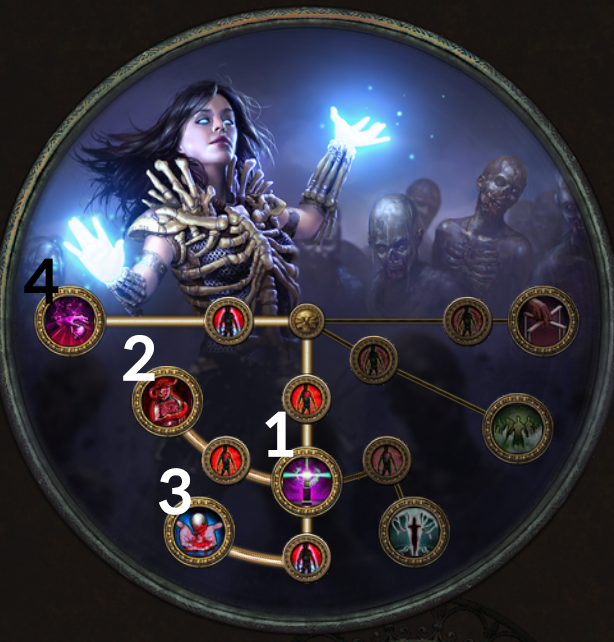
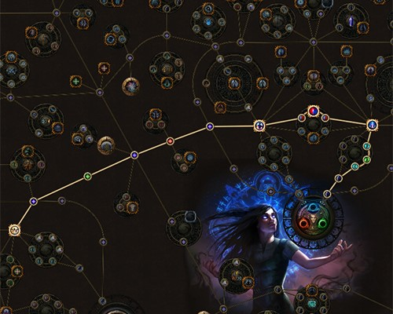
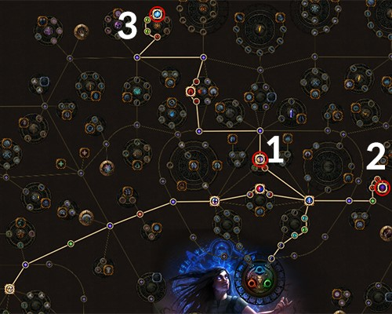
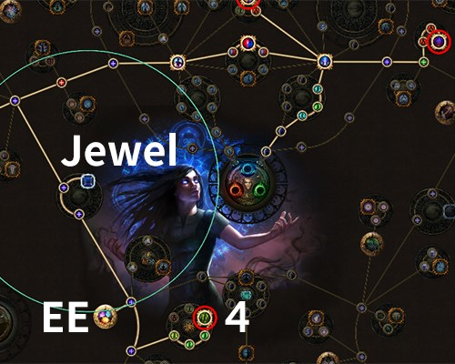
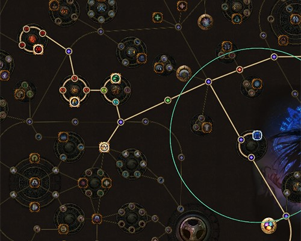
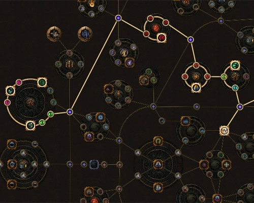

1-3번은 모두 직접적으로 미니언을 강하게 만들어줍니다.
사실 2번(좀비 강화)이 먼저냐 3번(스켈레톤 강화)이 먼저냐는 취향차이 같은데,
제 경우는 항상 따라다니고 매번 소환해줄 필요 없는 좀비를 먼저 늘려주는 게 좋다고 생각해서 2번을 먼저 찍었습니다.
3번 어센던시를 배운 뒤부터는 한 번에 스켈레톤 3마리를 소환할 수 있게 되어(쥬얼 착용시 5마리) 스켈레톤으로 맵핑이 가능해집니다.
그 전에는 액트 돌면서 보스전 준비할 때, 스켈레톤 하나씩 정성스레 소환을 했어야 하는데, 이거 배우고 나서는 편-안합니다.
4번은 오라 스킬을 통해 미니언의 딜을 올리고, 미니언과 본체의 레지를 올려줍니다(본체 딜도 오르긴 하는데, 본체는 거들 뿐입니다).
덕분에 아이템에서 레지를 덜 땡겨와도 75% 풀레지를 만들 수 있습니다. POB를 보시면 제 레지가 75를 넘질 못하는데,
이 어센던시 덕에 오라를 켜면 75% 레지가 됩니다.


네크로맨서로 키우고 싶더라도, 초반에는 스펠을 사용하는 마법사처럼 키워야 합니다.
그래서 본체의 데미지를 올려주는 노드들로 찍어줍니다.

이후에는 좀비, 스켈레톤의 최대 숫자를 올려주는 노드들을 찍어줍시다.
1, 2, 3번 순서대로 진행해주세요. 여기까지 오셨으면 액트 3의 중후반부쯤 될 겁니다.

좀비 숫자를 늘려주는 마지막 4번 노드까지 찍어줍시다.
Jewel 위치에는 Violent Dead를 끼워줍니다.
① 액트 5 퀘스트 보상으로 1개를 받을 수 있습니다.
② 1개는 따로 구매하셔야 합니다.
구매하실 여력이 되신다면 착용해주시되, 어려우시면 아예 쥬얼 자리에 스킬포인트 쓰지도 말고 지나가세요.
초반에는 스펠 캐스터에 미니언을 끼워넣은 것처럼 키워야 하는데, EE는 액트 후반부에 스펠을 버리고 미니언에 집중하게 되면 그 때 찍어주세요.


이후에는 미니언 관련 노드들을 찍어주시고, 여기까지 다 찍었다 하시면 POB를 참고하셔서 나머지 곁가지 노드들을 찍어주시면 됩니다.
Q) 그럼 최대 소환 가능한 좀비, 스켈레톤은 몇 마리인가요?
A) 어센던시, 패시브 스킬만 고려하면 아래와 같습니다.
좀비 = 기본 3 + 어센던시 2 + 패시브 스킬 5 = 10
스켈레톤 = 기본 5 + 어센던시 2 + 패시브 스킬 4 = 11
장비 옵션에 따라 이게 변할 수 있는데, 곧 나옵니다.